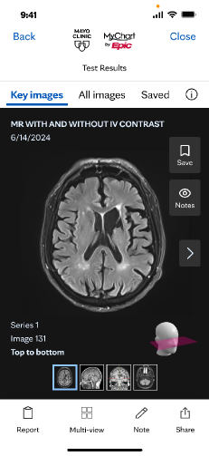
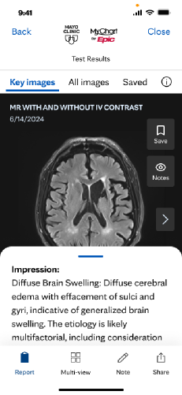
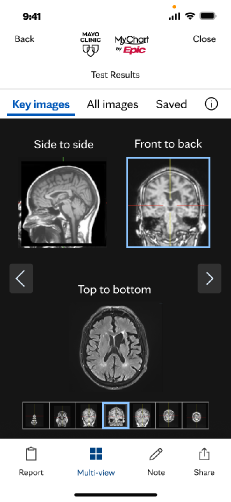
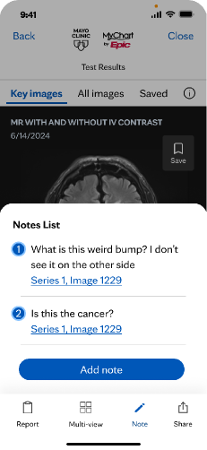
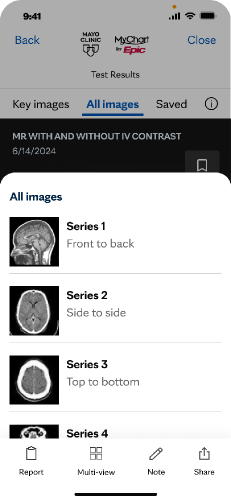
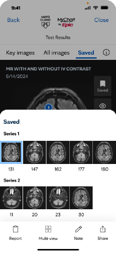
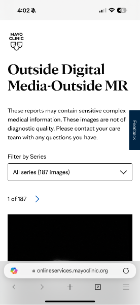
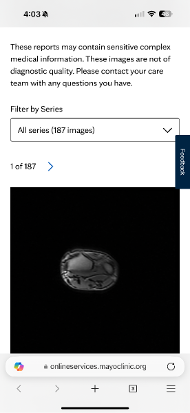
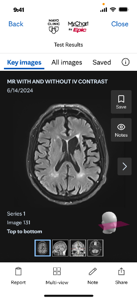
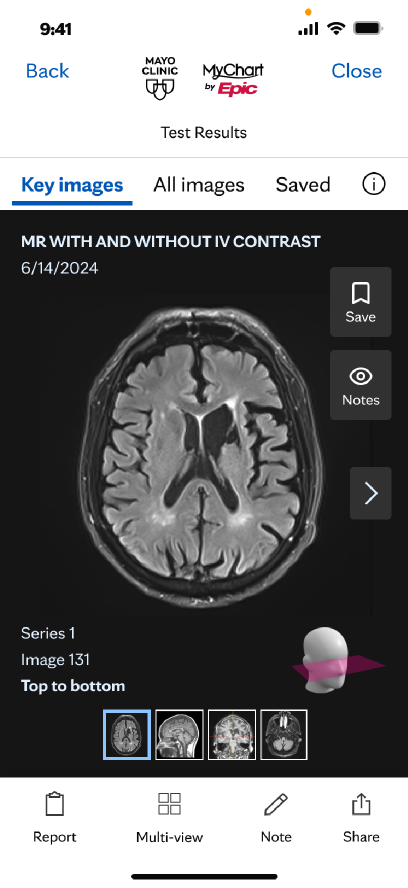

A clearer, more intuitive imaging experience that helps patients understand their own scans, from MRI slices to the radiologist's report.






When patients at Mayo Clinic get an MRI or CT scan, they can view their images and the radiologist's report in the patient app. But a scan can be hundreds of grayscale slices of anatomy, described in a report written for clinicians. Patients were left looking at images they couldn't orient themselves in and a report they couldn't connect to what they were seeing.
As Design Lead on Mayo Clinic Digital Health, I designed InfinityView: a patient-facing imaging viewer that turns a clinically complex experience into one patients can understand and trust.
How might we help patients understand their own imaging, without oversimplifying the clinical truth?
The original experience was a web-based file viewer. InfinityView reorganizes the same imaging around how patients actually think: where am I looking, what does it mean, and what should I ask my doctor?



Talking with patients about how they reviewed their imaging surfaced three patterns that became the backbone of every design decision.
Patients said unclear anatomy felt scary and overwhelming. Knowing where they were looking lowered their stress.
Viewing the report alongside the images prevented misinterpretation and increased comprehension.
Patients used notes to ask clearer, more specific questions in their appointments.
Rather than inventing new interactions for a high-stakes experience, I leaned on familiar iOS patterns (segmented controls, drawers, and native motion) and used progressive disclosure so patients only see complexity when they ask for it. Five ideas work together:
InfinityView walkthrough
Showing multiple anatomical planes (side to side, front to back, top to bottom) gives patients a mental map of their anatomy and reduces uncertainty about what they're viewing.
The report opens in a drawer instead of a new screen, so patients never lose their place in the scan while reading the radiologist's findings.
Patients can leave a note on the specific image that worried them. Each note links back to its series and slice, so "what is this bump?" becomes a question a doctor can find and answer.

Instead of dropping patients into hundreds of slices, InfinityView opens on the images the radiologist actually referenced: signal, not noise.
The biggest impact was emotional. For many patients, understanding their scan is the difference between anxiety and confidence going into an appointment.
Clarity isn't just a usability metric in healthcare. It reduces the emotional burden of not knowing.
Let radiologists mark hotspots directly on the image, so patients see exactly what the report is describing.
Tailor guidance and context to the patient's condition and the type of scan.
Plain-language summaries of the report, written with careful, clinically safe language, built on an architecture that scales.